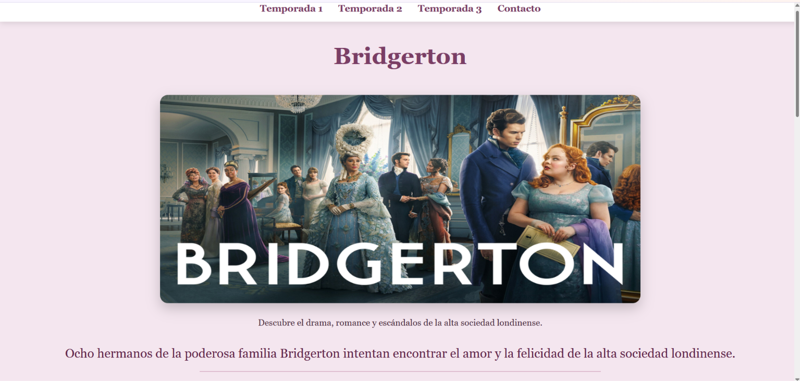

Fan page de Bridgerton
Sitio web de cinco páginas (inicio, tres temporadas y contacto) sobre la serie de Netflix, desarrollado para la clase de Lenguajes de Internet.
- Problema
- Aplicar HTML y CSS en un sitio completo y navegable, con estructura organizada y diseño propio.
- Lo que hice
- Diseñé y maqueté el sitio: estructura de las páginas, navegación entre ellas, estilos, colores y tipografía, e integré imágenes y el video del tráiler.
- Resultado
- Un sitio estático que integra texto, imágenes, video y navegación, y consolida mis bases en HTML y CSS.